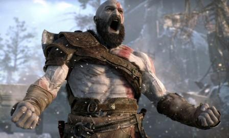

Action-adventure game God of War has won the sought-after Best Game prize at the 15th annual Bafta Games Awards.

The game is rooted in ancient mythology and stars Kratos, the former Greek god of war, and his son Atreus.
Fortnite, released in 2017, was named best evolving game.
Despite receiving six nominations, UK-made western adventure Red Dead Redemption 2 walked away empty-handed at the glitzy ceremony
in central London. The first God of War game was released in 2005. This eighth instalment in the series, developed by Santa Monica Studio, sees its iconic lead character
Kratos - son of Zeus - as a struggling single parent.
Cory Barlog, director of God of War, told the BBC winning the awards was "amazing, overwhelming, and scary".
He said the win showed that story-led games could be as "relevant" as the presently popular Battle Royale style titles.
Nintendo's Labo won two awards,
one for best family game and the other for innovation.
It is the cardboard toolkit that lets players explore the interactivity of the firm's Switch console, for example by creating a piano.
The Bafta winners in full were:
- Original Property: Into the Breach
- Music: God of War
- Game Design: The Return of the Obra Dinn
- Evolving Game: Fortnite
- Narrative: God of War
- Debut Game: Yoku's Island Express
- Mobile: Florence
- Family: Nintendo Labo
- Audio Achievement: God of War
- Best British Game: Forza Horizon 4
- Mobile Game of the Year (Audience Vote): Old School Runescape
- Best Game: God of War